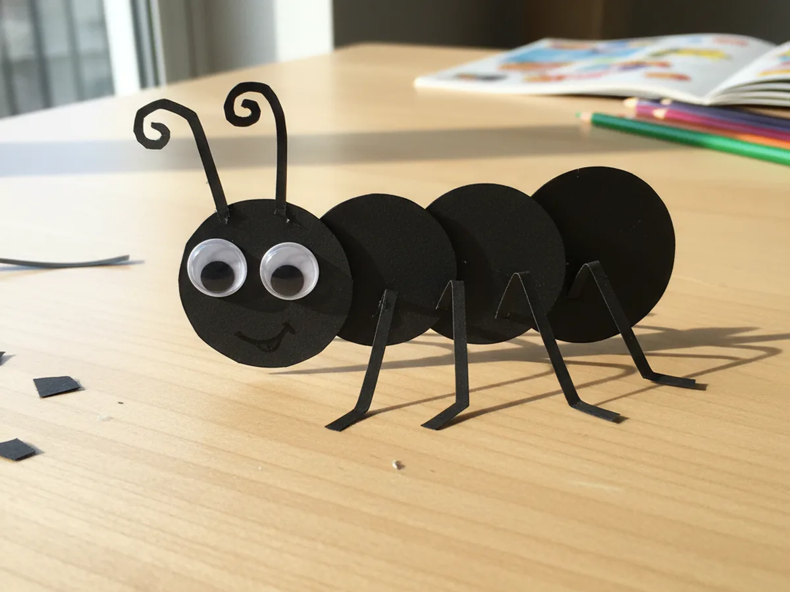
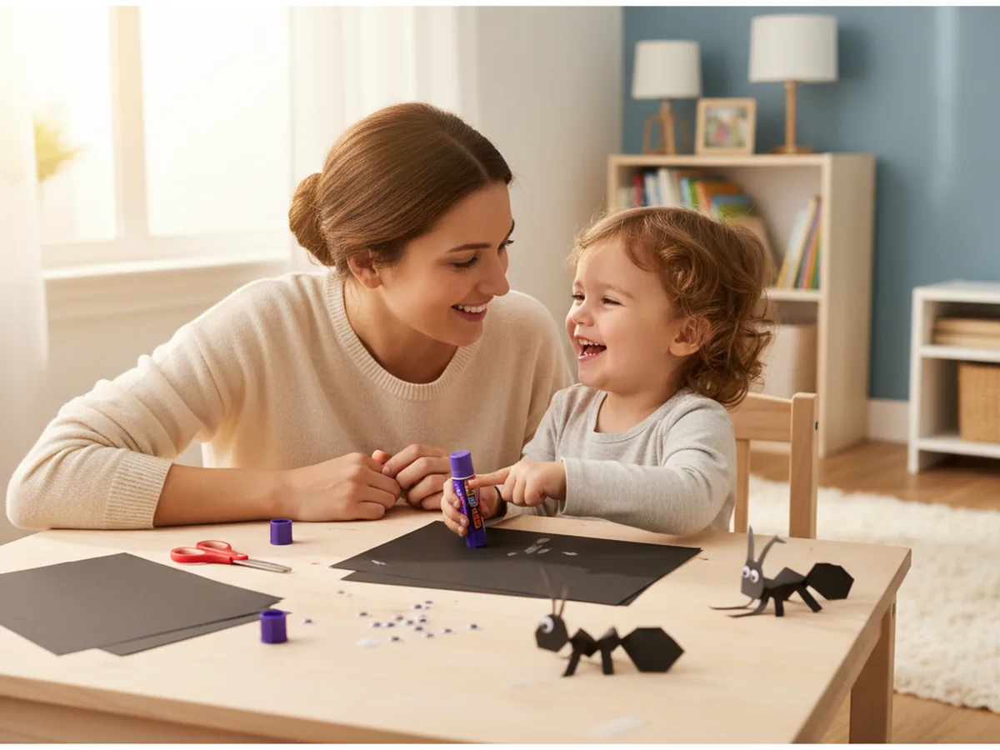
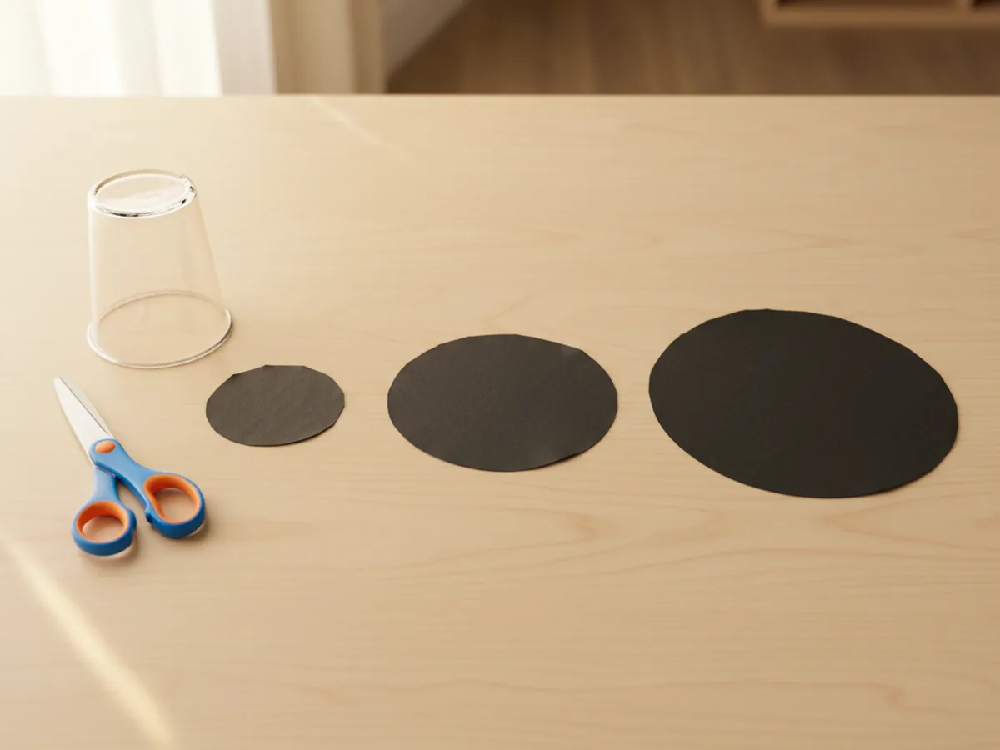
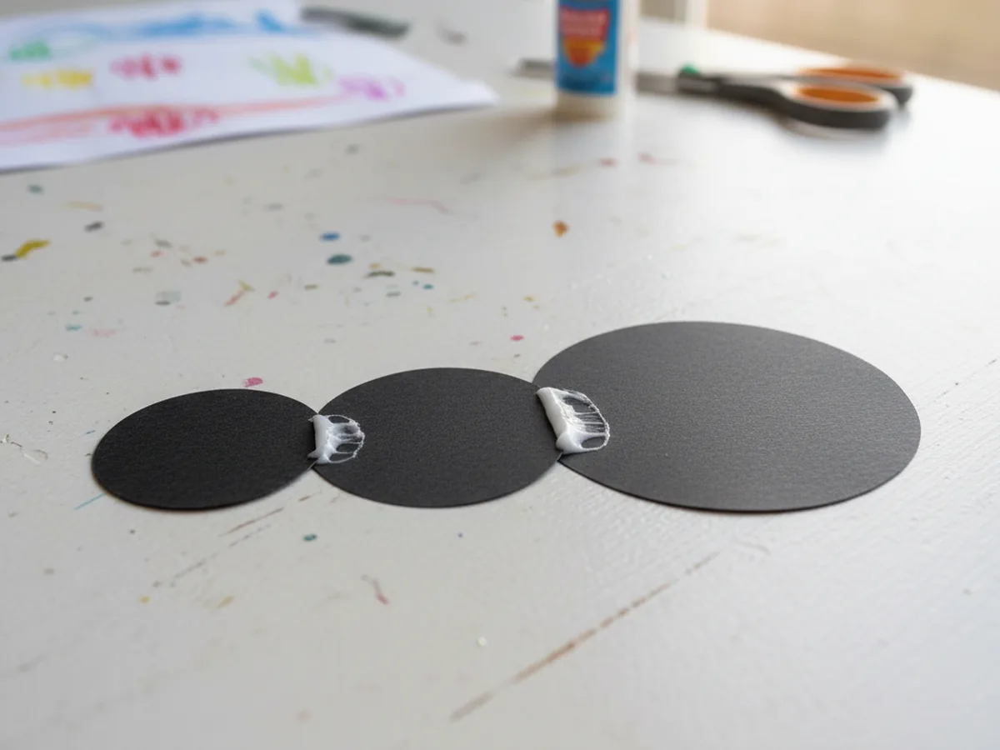
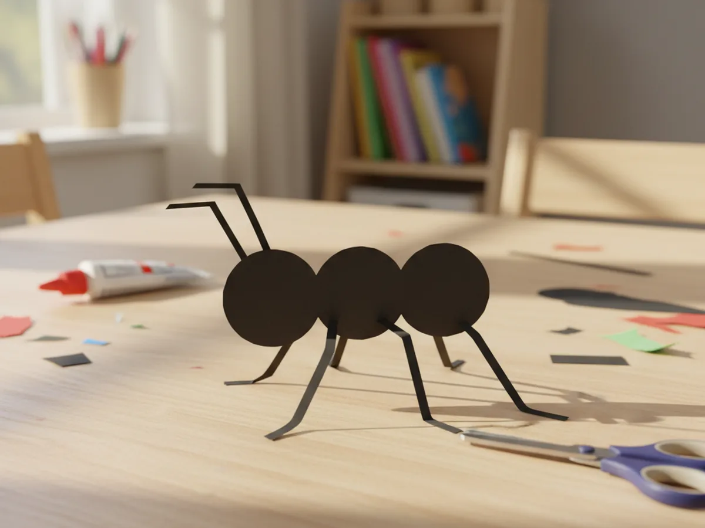
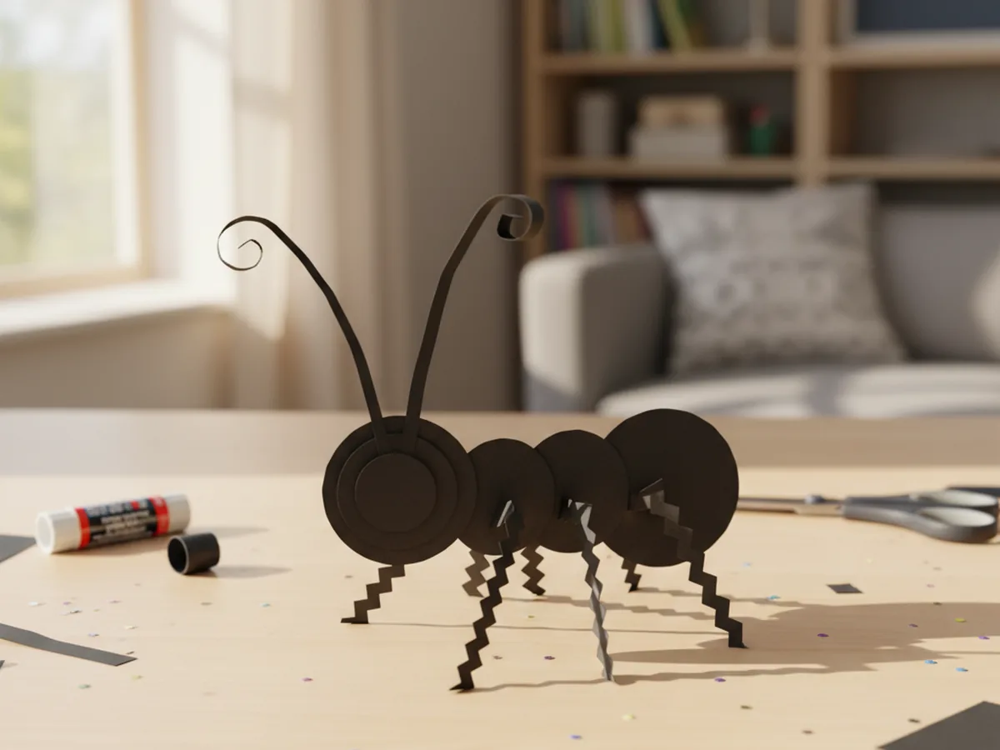
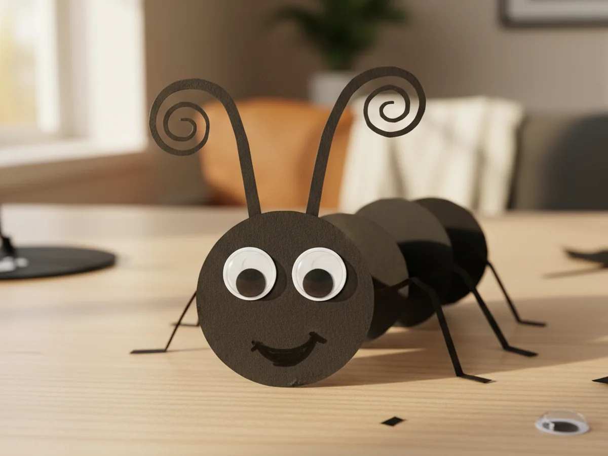
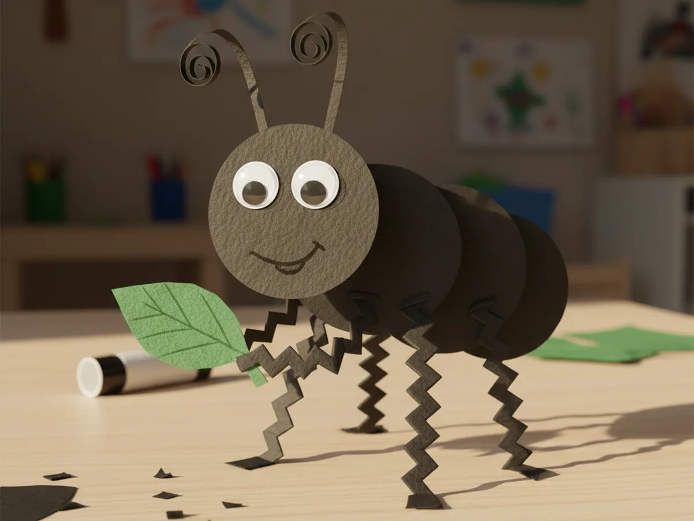

Little ones are endlessly fascinated by the tiny ants marching across the sidewalk, so why not bring one inside for a cozy craft afternoon? This paper craft ant turns a few simple black paper circles into the cutest little bug, and it is gentle enough for even your youngest crafter. It uses supplies you almost certainly already have at home, makes very little mess, and ends with a friendly ant your child will be proud to show off. 🐜
Why Kids Love This Craft
Kids adore anything small and busy, and ants are a favorite for a reason. Making a paper craft ant lets your child shrink down into that tiny insect world and create their very own bug to play with. They get to decide how the legs bend and where the eyes go, so every ant turns out with its own funny personality.
This ant paper craft is also a sweet little workout for growing hands. Cutting the circles builds scissor confidence, gluing the body parts in a row teaches careful placement, and curling the antennae gives small fingers great practice. It feels like pure play, yet it quietly strengthens the same skills your child will lean on for writing and drawing later.
Best of all, the finished ant becomes a tiny friend for imaginative play. Your child can march it across the table, line it up next to other paper bugs, or tuck it into a pretend picnic scene. A handmade paper ant craft keeps the giggles going long after the glue has dried. 🌿

What You'll Need
Here is everything you need to make this paper craft ant together. Nearly all of it is probably already waiting in your craft drawer.
- Crayola construction paper, 12 colors, the black sheets make the body, legs, and antennae of the ant.
- CCINEE self-adhesive googly eyes, the peel-and-stick eyes bring the friendly ant face to life in seconds.
- Fiskars blunt-tip kid scissors, sized for ages 4 to 7 and easy on little hands.
- Elmer's washable purple glue sticks, the disappearing color helps kids see exactly where they have glued.
- Crayola classic broad line markers, a black one is perfect for drawing the little smile and any extra details.
- A pencil for lightly tracing circles before cutting.
- A small round lid or cup to trace the body circles quickly.
Step-by-Step Instructions
Follow along with this paper craft ant step by step. Each part is short, friendly, and easy enough for a preschooler to do most of the work with a little help from you.
Step 1: Cut the Three Body Circles
Every ant has three round body parts, so this is where you begin. Help your child trace three circles on black construction paper using a lid or cup, making one small one for the head, a medium one for the middle, and a slightly larger one for the back. Tracing around a round object keeps the shapes nice and even without any fuss.
Cut out all three circles together, and do not worry about perfectly smooth edges. A few wobbly bumps just make your paper craft ant look charmingly handmade, which is exactly the look we love around here.

Step 2: Glue the Body Together
Now bring your ant to life by joining the pieces. Lay the three black circles in a row from smallest to largest, with the little head circle on one end and the bigger back circle on the other. Let the edges just touch or overlap a tiny bit so the body looks connected.
Add a dab of glue where the circles meet and press them gently onto a sheet of paper or straight onto the table to set. In moments, your child will see a real ant body taking shape, and this is always the most exciting part of making an ant paper craft.

Step 3: Add the Six Legs
Real ants have six legs, and this is the part kids find most fun. Cut six thin strips of black paper, then help your child glue three legs onto each side of the middle body part. Bending each strip into a little zigzag before gluing gives the legs a wonderfully buggy, ready-to-march look.
Space the legs out evenly so your paper craft ant can stand tall and proud. If the strips feel too long, simply trim them shorter. Counting the legs out loud together is a sweet little way to sneak in some learning while you craft. 💛

Step 4: Add the Antennae
No ant is complete without its wiggly antennae. Cut two short, thin black strips and glue them to the top of the head circle so they point upward like a little V. These tiny details are what make the bug instantly recognizable as an ant.
For an extra cute touch, gently curl the top of each antenna by wrapping it around a pencil for a second. The soft curl gives your paper ant craft a friendly, almost cartoon-like charm that kids absolutely love.

Step 5: Add the Happy Face
Here comes the moment that gives your ant all its personality. Peel and stick two googly eyes onto the small head circle, placing them however your child thinks looks best. Googly eyes instantly turn a plain shape into a lovable little creature.
Finish the face by drawing a small curved smile under the eyes with a black marker. Step back and watch your child beam as their paper craft ant looks right back at them with a cheerful grin. 😊

Step 6: Add Final Details and Display
Your little ant is almost ready for its big debut. Let your child add any final touches they like, such as tiny white dots on the body, a paper leaf for the ant to carry, or a few extra ant friends to make a whole marching line.
Now find the perfect spot to show off the finished bug. Stand it on a windowsill, tape it into a homemade bug book, or set it on the table for some pretend picnic play. Step back and admire the paper craft ant for kids you made together, one little leg at a time. 🐜

Variations to Try
Toddler Tear-and-Glue Version: Skip the scissors and let your youngest tear the body circles and leg strips from black paper by hand. The rough torn edges look adorably buggy and the tearing is wonderful practice for little fingers that are not quite ready to cut.
Colorful Rainbow Ant: Swap the black paper for bright colors and make a red, blue, or rainbow ant instead. This is a fun way to use up paper scraps and lets your child invent their very own make-believe insect.
Marching Ant Parade: Make several ants and glue them in a row onto a long paper strip to create a marching ant parade. Add a paper crumb or picnic blanket at the end of the trail for a playful little scene.
Final Thoughts
This paper craft ant is one of those simple projects that gives back so much more joy than the few scraps of paper it takes. It is quick to set up, easy to follow, and the finished ant opens the door to plenty of pretend play. It works just as well on a rainy afternoon indoors as it does as a fun lead-in to a backyard bug hunt.
Try making it together and let your child take charge of the legs, the eyes, and the cheerful little smile. They will want to make a whole colony of paper ants before you know it. Happy crafting, friend!
More Crafts You'll Love
If your little bug lover enjoyed this paper craft ant, here are two more cute insect projects to try next: